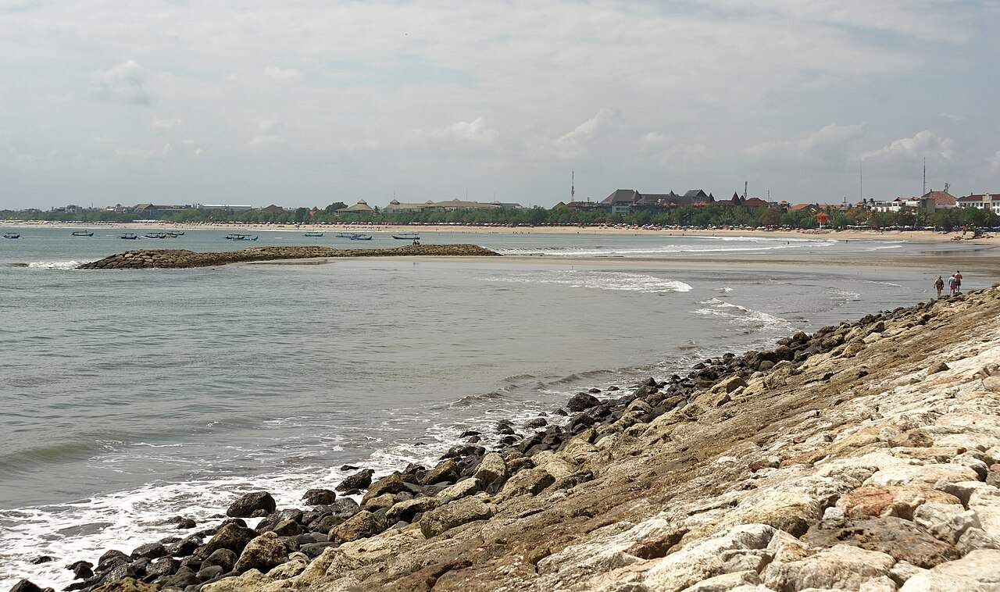

Look · Demand
A guest count is not a yield.
Direct foreign arrivals to Bali in 2025 were the highest year in the BPS series. That sentence is about people clearing the airport. It is not about what a building earned.

The year BPS actually printed
Badan Pusat Statistik Bali, as reported by ANTARA, put direct foreign arrivals at 6,948,754 in 2025. That was 9.72% above 2024. The 2024 base on that same percentage is 6,333,360. The last full year before the pandemic, 2019, was 6,275,210 on the BPS Bali historical table. 2025 cleared both.
Australia was 23.44% of the 2025 foreign total, about 1.63 million trips. Domestic trips in the same year were 26,615,306. Eleven of the twelve months in 2025 were above the same month in 2024. February was the exception. The monthly series is drawn on the homepage.
ANTARA, citing BPS Bali, 2026. 2019: BPS Bali.
Where the number gets borrowed
A sales page will take 6.95 million, or sometimes a larger round number, and place it next to a nightly rate. Kiss Developments’ public homepage says Bali welcomed 12 million tourists in 2025. That figure is not the BPS direct-foreign total, and it is not the domestic-trip total either. Twelve million sits between the two series and matches neither. The useful habit is to ask which count, which gate, and which year.
Hotel occupancy is a second series. BPS room occupancy for star hotels in 2025 was 61.02% in Bali and 49.30% for Indonesia. That is a star-hotel number. It is not a Canggu villa book, and it should not be pasted onto a three-bedroom leasehold.
Kiss line as published on kissgroup.co. Hotel occupancy: BPS via Databoks.
What the record is allowed to do
Arrivals explain why a well-run asset in this corridor can have a guest. They do not explain whether the land can legally be built, whether the building can legally be used, or who is still accountable in year five. Those are the stack: source, permit, wall, certificate, management, exit. The guest count is the reason the file is worth opening. It is not the file.